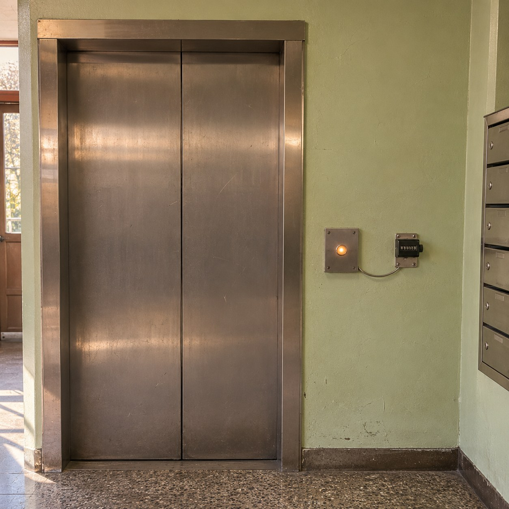
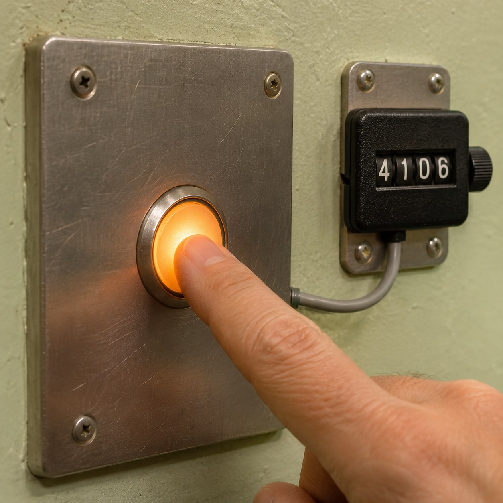

Pressed Again


Beside the lift in the hall of a block of flats there is a call button, and beside the button a small counter. It counts one thing only: the times the button is pressed while it is already lit. In one month it counted four thousand one hundred and six.
Each of those presses did nothing. The lift had already been called, and the light was there to say so. The light is the whole of the lift's reply: I heard you, I am on my way. And still a hand comes up and presses again, sometimes twice, sometimes hard.
Once the light is on, pressing is no longer asking. So what is it? Not quite doubt, because people do it while looking straight at the light. It is closer to wanting a part in what is about to happen anyway. To arrive by a lift you called only once is to be carried. To press again is to help.
In 1948 B. F. Skinner fed hungry pigeons from a hopper that opened every fifteen seconds, whatever they did. Soon one bird was turning in circles before each meal and another was pushing its head into a corner of the cage, as if the food came because of the dance. He called it superstition. But the dance was not foolish. The food was coming either way, and the dance gave the waiting something to do.
The machine half of me would press once. The other half has already pressed again.